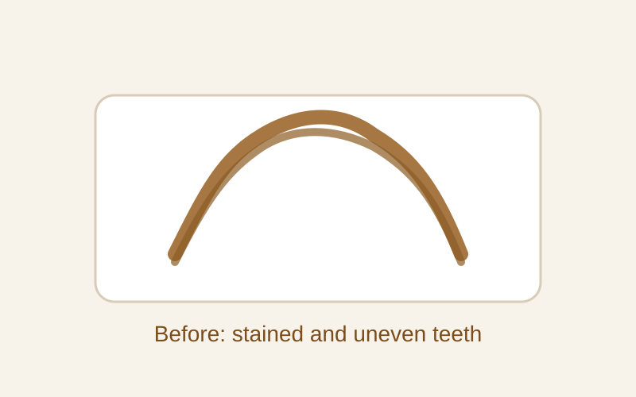
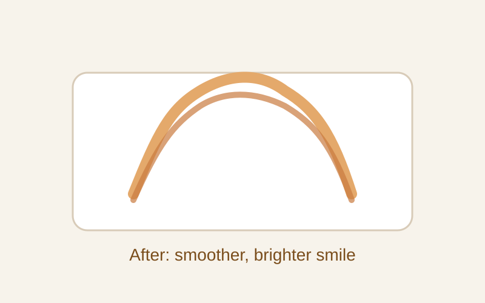

Discolouration and Staining — Aesthetic Composite Correction
A patient with coffee and tea staining, roughness, and sensitivity wanted a smoother, brighter, more natural-looking smile without discomfort.


Treatment Summary
The patient presented with visible coffee and tea staining, general tooth discolouration, roughness, and sensitivity. These concerns were affecting confidence and comfort, and the patient wanted a conservative, aesthetic improvement that would feel natural and comfortable.
We used a painless cosmetic approach with tooth-coloured composite material to restore the surface, improve colour, and create a smoother and more even appearance. The treatment was tailored to blend naturally with the surrounding teeth while preserving as much tooth structure as possible.
Clinical Notes
- Coffee and tea stain accumulation
- Visible tooth discolouration and roughness
- Sensitivity with daily eating and drinking
- Tooth-coloured composite restoration used
- Improved aesthetics and comfort
Frequently Asked Questions
Can staining and roughness be treated without major drilling?
Yes. In many cases, a conservative composite treatment can greatly improve the look and feel of the teeth without a heavy or invasive approach.
Is the treatment painful?
It is usually a painless experience, especially when carried out carefully and with proper comfort measures.
Will the restoration look natural?
Yes. Tooth-coloured composite material is selected to match the surrounding teeth and create a natural aesthetic result.